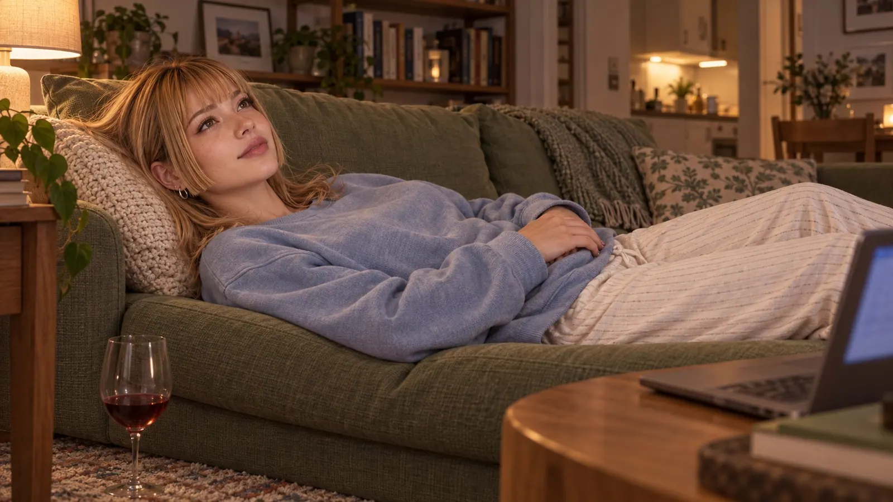

LovingU EP2: More
The weeks after that had no particular rhythm, and that was exactly what was particular about them.
Claire came home from the lab in the evening, opened the laptop, and his dot was glowing green. It was as reliable as the fridge that made noises at night, and just as reassuring. It was strange to compare a stranger's green dot to the hum of a fridge. But some comparisons are ugly and right anyway.
They wrote. Sometimes about things that mattered, sometimes about things that didn't, and the transition between the two was so soft that Claire usually only noticed it once she was already in the middle of it. A conversation about coffee became a conversation about morning rituals, and a conversation about morning rituals became a conversation about what it feels like to wake up and have that first thought, and Claire had written: "My first thought is usually that I don't want to get up," and Anakry had written: "Mine too. But for a few weeks now I've been thinking about a second thing after that," and Claire hadn't asked what the second thing was, because she knew, and because things you know are sometimes more beautiful when you don't say them.
Anakry still asked his strange questions. "If you had a room nobody could see into, where nothing counted - what would you do in it?" Claire had thought for a while and then written: "Probably exactly what I'm doing now. Sitting at my laptop talking to someone I don't know."
"You know me," Anakry had written.
"I know letters on a screen. I know your sentences. I know the pauses between your sentences, and sometimes they say more than the sentences do."
"Isn't that enough?"
Claire had watched the cursor blink and thought about it and then written: "It is. That's the problem."
Because it was enough. Because it was more than enough. Because Claire had had people of flesh and blood in front of her in her life, with faces and voices and hands, and none of them had given her the feeling of being known that Anakry gave her with nothing but text, and that was either the most beautiful or the saddest thing that had ever happened to her, and she wasn't sure there was a difference.
There were evenings when Anakry wrote more slowly than usual.
Claire noticed it in the pauses. Normally his answers came after a few minutes, and the minutes were part of the rhythm, and Claire had learned not to count them, because counting made the minutes longer and the answers no faster. But sometimes it took ten minutes. Fifteen. And when the answer came, it was shorter than usual, and sometimes letters were swapped, and sometimes a word was missing, and Claire read past it, because she read past her own typos too, and because you don't hold it against someone that they type slowly.
"You okay?" she had asked once, when an answer took twenty minutes and then consisted of only three words.
"Tired today. Sorry."
"No need to apologize. Tired is allowed."
"Thanks." And then, after a pause: "It's nice that you ask."
Claire had smiled and kept the sentence. Not on her hard drive.
There were also evenings when he wrote almost nothing. "Here," it would say at the beginning, and "Good night" at the end, and in between a silence that felt like someone sitting next to you in a room without needing to talk. Claire stayed online anyway. She read, or scrolled through the chat, which was always the same five people and the same conversations about nothing, and sometimes she typed something into her DM window and sent it, not because she expected an answer, but because she wanted him to know she was there.
"Today I saw a pigeon trying to carry a french fry bigger than its head," she wrote on one of those quiet evenings. "It didn't manage, but the attempt was impressive."
Nine minutes. Then: "Admirable."
"The pigeon or me?"
"Both."
Claire laughed. Alone, in her apartment, in front of a screen, at a single word written by a person she had never seen. And that was fine. That was more than fine. And that was the second thing she thought about in the mornings, after not-wanting-to-get-up, and she had never told him, because some things are more beautiful when you keep them to yourself.
It started with a question.
Not one of his strange, beautiful questions, but a completely ordinary one, on a Wednesday evening so unremarkable that Claire couldn't remember afterwards what she'd had for dinner.
"Have you ever done RP?" Anakry wrote.
Claire thought about it. "You mean with dice and dragons?"
"No. No dice. No rules. Just - writing a story together. You write, I write, and we see where it goes."
Claire typed and deleted and typed. "Like ping-pong with words?"
"Like ping-pong, yes. Except the ball is allowed to lie on the floor for a while sometimes."
Claire smiled. "And about what?"
"About whatever you want."
It was an invitation exactly as wide as it sounded, and Claire knew it, and Anakry knew she knew, and it lay between them like a key someone had put on the table without saying which door it belonged to.
They started harmlessly. A scene in a café, two strangers sitting at the same table because no other was free. Anakry described the room in two sentences, precise and calm, and Claire described the woman turning her cup and not looking up, and they both noticed that the woman was Claire and the stranger was Anakry, but neither of them said it, and not saying it was part of the game.
They wrote on it for three evenings. The scene grew. The stranger said something unexpected, and the woman looked up, and her eyes were -
"What color?" Anakry had written. Not in the RP. In parentheses, OOC, like an actor stepping behind the curtain for a moment.
Claire had looked at the screen and laid her fingers on the keyboard and thought: This is the moment. Angelique would have made up a color. Something that suited the character and not her.
She wrote her real eye color.
No parentheses. No OOC. Just the color, in the story, as if it were fiction, even though it wasn't.
Anakry had taken eight minutes before he kept writing. Claire didn't count them, but she felt them.
What came after that was no longer a story about two strangers in a café. It was a story about two people who knew who they were and still used the third person, because the third person was a safety net under which you could fall further than you would ever have dared in the first.
The evening the RP crossed the line was a Saturday.
Claire had a glass of wine next to the laptop, the first in weeks, and she didn't know whether she was drinking it because she wanted to be brave or because Saturdays sometimes felt as if they needed a glass of wine to set them apart from the other days.
They kept writing the scene. The two strangers from the café were in an apartment by now, his, and it had gotten late in the story, just as it had gotten late in front of Claire's screen, and the woman in the story was standing at the window and the man came up behind her and -
"(Is this okay?)" Anakry wrote.
Claire read the parentheses and felt her heartbeat in her fingertips, which was a strange place for a heartbeat, but she was sure it was there.
"(Yes)" she wrote.
"(Sure?)"
"(Write.)"
He wrote.
The man in the story stood behind the woman at the window, and his hands were on her shoulders, and he brushed her hair aside, and his mouth was at the nape of her neck, and Claire read the sentence and felt her own neck, the spot where the hair stopped, the sensitive skin beneath it, and a wave of goosebumps ran down her back, involuntarily, as if someone had actually touched her.
She answered. The woman - Claire - leaned back, her back against his chest, and she felt his breath at her ear, warm and even, and Claire typed that while lying on the sofa, and her own breath wasn't even, not at all, and it wasn't Angelique typing, and it wasn't the woman in the story, it was Claire, and she wrote things she had never said out loud, things that here, in the third person, found a place for the first time.
"(Hey)" he wrote at some point, in the middle of the scene.
"(Hey)"
"(All good?)"
"(Yes. Nervous. But yes.)"
"(Me too)" he wrote, and Claire thought: I believe you. And thought: I want you to keep writing. And thought: I've never wanted anyone this much whom I can't touch.
He kept writing. His hands in the story slid lower, from her shoulders down her arms, over her hips, slowly, as if he were reading a map he had never seen before. His thumbs on her hip bones, his fingers on the skin above, and he pulled her closer, and Claire read the sentence and felt it, the thumbs that didn't exist, on hips nobody was touching, and the warmth gathering between her legs, slow and heavy, like flowing honey.
She answered. The woman - Claire - turned around and pulled him to her, and her hands were on his chest and slid under his shirt and her palms lay on his skin and she felt his heartbeat, and Claire typed it with hands that were shaking and didn't fix the mistakes, and he didn't fix them either.
He wrote how he kissed her. Not her mouth first. Her neck. The soft spot below her ear, where the pulse sits, and Claire closed her eyes and felt her own pulse, fast and loud and everywhere, in her fingertips, in her wrists, between her legs. She opened her eyes, because she had to read, because she needed the words, because the words were the hands she didn't have.
Then her mouth. He kissed her, and he described it as if he were doing it slowly, as if he had all the time in the world, and Claire's lips were dry and she ran her tongue over them and thought: This is crazy. This is completely crazy. And thought: Don't stop.
"(God)" she wrote, in parentheses, OOC, and it wasn't a comment on the story, it was a comment on her, on what was happening inside her, and what was happening inside her was something she had no word for, something bigger than arousal and more personal than lust.
"(Yes?)" he wrote.
"(Don't stop)"
He wrote how he undressed her. Not fast, not impatient. Button by button. His mouth on her shoulder while his hands undid her blouse, and the fabric slid over her skin, and he took his time, and the time was the worst and the best part, because Claire felt the waiting, the waiting in her whole body, and her left hand was no longer on the keyboard.
It lay on her stomach, flat, over the fabric of her shorts, and Claire would have been ashamed of that an hour ago, a lifetime ago, but not now. The warmth between her legs wasn't honey anymore, it was pressure, an urging, and her fingers pressed through the fabric and she felt herself and the touch was too little and too much at the same time, and on the screen he wrote how his hand stroked over her stomach, lower, and Claire moved her own hand in the rhythm of his sentences, as if his text were the choreography and her body the dance.
He wrote how he touched her. There. His fingers, slow, attentive, as if he were listening with his hands, and Claire read and her hand slid under the waistband of her shorts and under the fabric beneath and her fingers found herself and she was wet, so wet it surprised her, and she thought: Letters. These are letters on a screen, and I'm so wet my fingers are sliding.
She typed with one hand. One-handed typos nobody fixed. The woman in the story pulled his shirt up and ran her nails down his back and pulled him down on top of her, and Claire described how she felt him, his weight on her, and she typed it and her hips moved against her own hand, involuntarily, and she bit her lip and thought: This is absurd. I'm lying on my sofa and I'm about to come because of letters on a screen.
And then she thought: No. Not because of letters. Because of him.
"(I want you)" she typed, in parentheses, OOC, and it was the most honest thing she had ever written, because it wasn't the character saying it, it was her.
"(I know)" he wrote. And then, in the story: He was above her and between her and he moved into her, slowly, and Claire read the sentence and her breath caught and her fingers circled and she felt open and naked and vulnerable and she didn't want it to stop.
He wrote how he whispered something into her ear. Her name.
Angelique.
Claire read the name, and something in her tightened, in the middle of everything. Not that one. Not now. Not during this.
"(Claire)" she typed. With a hand that was shaking.
The pause after that was long. Longer than all the others that night. Then: "(?)"
"(That's my name. If you're going to whisper a name, whisper that one.)"
Seven minutes. Claire didn't count them. She just lay there and breathed and was afraid she had given too much, more than her eye color, more than anything, and then, in the story, alone on a line, there was a single word:
Claire.
His next paragraph described how he moved, inside her, slowly and then less slowly, and his forehead rested against hers and his breath mixed with hers and he whispered the name again, her real one, and the paragraphs were short, two sentences, sometimes one, and every sentence was aimed at her, only at her, and Claire read and her hand moved faster and she couldn't see the keyboard anymore because her eyes were wet and her breath was shallow and she was close, so close, and her hips lifted off the sofa and she held the laptop with her other hand so it wouldn't slide off, and that was ridiculous, and she was right on the edge.
"(Are you there?)" he wrote, after three minutes.
Claire typed with wet fingers and a hand that barely obeyed: "(Yes. Can't type right now. Your fault.)"
"(Good)" he wrote. "(I've got you)"
And then, outside the parentheses, in the story that wasn't a story anymore, two sentences. Only two. So direct and so tender at the same time that Claire had to read them and came while reading, with his sentence on the screen and two fingers inside herself and her back arching, and her breath stopping and then coming back in a sound she didn't know, one she had never made, one that came from a place built by letters on a screen and was still more real than anything she had ever experienced with a person standing in front of her.
The wave came and carried her and held her and slowly let her go, and Claire lay there, and her fingers were still, and her heart beat in the quiet of the apartment, and the screen glowed, and she thought about nothing and everything and him.
It took a while before she could type again. She lay there, the blanket half over her, the laptop beside her, and her fingers slowly found their way back to the keys, and she wrote the scene to its end, quietly, gently, the two characters lying next to each other, breathing, and Claire lay alone, breathing, and her hands smelled of herself and of wine and of something she couldn't name, and the difference between the story and her was gone.
And then there was silence. The silence after, when you lie there and don't have to say anything, and Claire thought: So this is what it feels like.

"(Hey)" he wrote, after a while.
"(Hey)" she wrote.
"(That was...)"
"(Yes)"
"(Yes)"
That was all it needed. Two people who meant the same "yes".
"Good night, Claire," he wrote. Not in the story. Not in parentheses. Just like that, as if he had never called her anything else.
She lay on the sofa and read her name, and it was as if someone had switched on a light in a room she hadn't known existed.
"Good night, Anakry," she wrote. And then, because she was brave and because the evening deserved it: "Good night, whoever you are."
"You know who I am," he wrote.
"Yes," Claire wrote. "I think I do."
He wrote to her the next morning. That was new. He had never written in the mornings. The message was short: "The first thought today was better than usual."
Claire read the sentence in bed, the laptop on the duvet, and smiled, and the Sunday wasn't sad.
They wrote all day. Not much, not constantly, but again and again, in between, like people who live in the same house and run into each other in the hallway and don't have to say something important every time. He wrote: "I was thinking about the café earlier." She wrote: "The café we've never been to?" He wrote: "That one." And they both knew they weren't talking about the café, and not talking about it was their way of talking about it.
On Monday evening his messages were shorter again. Three words. Five words.
On Tuesday he wrote: "Tired today. Tomorrow?"
"Sure," Claire wrote. "Tomorrow."
On Wednesday no message came.
His dot was gray. All evening. Claire looked, looked away, looked. She opened the chat, scrolled to her last message, read "Sure. Tomorrow." and wondered how long a tomorrow was allowed to last before you had to call it something else.
Thursday. Gray.
Claire typed: "Hey. You okay?" She sent the message and looked at the gray dot and put her hands around the cup - the same cup, not empty this time, but cold - and waited.
Nothing.
Friday morning. His dot turned green.
Claire saw it on her way to the kitchen, in passing, and stopped, and her heartbeat did something she couldn't describe, and then a message came:
"Sorry. Had a few difficult days. I'm back."
Claire wrote: "No need to apologize. Difficult is allowed."
"Thank you, Claire."
Her name. Not Angelique. Claire. Since Saturday night he had been using her name, and every time it was as if someone opened a door, very quietly, and let fresh air in.
"How are you?" she wrote.
The answer came faster than ever before. And it was long. A whole paragraph, about his day, about the light in the morning, about a thought he'd had, about her. Three sentences about her. About what she meant to him. Not heavy, not solemn, just honest, like someone who has opened a door and decided not to close it again.
Claire read the paragraph twice. Three times. And thought: He's here. He's back. And he's more open than ever.
And then she wrote back, long and warm, with the feeling that something that could have broken had grown instead, and that the two days of silence had maybe been the space he needed to decide how much he wanted to show her.
And that he had decided to show her everything.
They talked about small things. About now, about everyday life, about the questions you ask when you want to get to know someone and all you have is text.
"Coffee or tea?" Claire wrote.
"Coffee. Black."
"Knew it."
"How?"
"No idea. Some things you just know."
"And you?" he wrote.
"Tea. And the cup is always empty before I notice I've finished it."
"That sounds like you."
"That sounds like an accusation."
"That sounds like a compliment," he wrote, and Claire read the sentence and thought: Who are you. And thought: Doesn't matter. Stay.
First published on X. Replies and conversation live there.